Courses › Physical Therapy Fundamentals › Module 1
Physical Therapy Fundamentals · 6211
Module 1 — Vital Signs & the Neurological Screen
Topics: 1.1 Vitals • 1.2 Neuromuscular System • Sync Session 1
📖 How to Use These Notes
- Best used with the lecture playing — keep these open, follow along, and add your own notes as you watch
- Lecture banners mark the start of each topic and run in the same order as the videos
- 🎙 Callouts = direct insights from the instructor's transcript
- ★ Tips = exam-relevant content or things the instructor told you to prepare
- Figures are taken directly from the module's slide decks
- Each topic ends with its own Quick-Reference Glossary
- Written from last year's recordings — if a lecture has been re-recorded or resequenced, Canvas wins
- PhysioU is the primary source for measurement TECHNIQUE — these notes cover the what and why; PhysioU shows the how
TOPIC 1.1
Assessing Vital Signs
1. Why Vitals
- The Guide to Physical Therapist Practice makes vitals an essential component of every new patient exam.
- PTs screen for conditions that negatively impact response to intervention (e.g., high BP limiting tolerance of standing exercise after LE surgery).
- Patients are often asymptomatic despite abnormal vitals — that is exactly why we measure.
- The set: heart rate, blood pressure, respiration rate, body temperature + the modern additions — gait speed, waist circumference, BMI.
2. Heart Rate
- Normal adult resting: 60–100 bpm. Below 60 = bradycardia; above 100 = tachycardia (more in cardiopulm courses).
- Manual sites: brachial, radial, carotid, femoral, dorsalis pedis. Devices: pulse oximeter (in your lab kit), digital BP monitor.
- Affected by: medications, emotional status, age, gender, environmental temperature, physical conditioning.
3. Blood Pressure
- Normal: <120 systolic AND <80 diastolic. Elevated: 120–129 AND <80. Then stage 1, stage 2 hypertension, hypertensive crisis per the staging table.
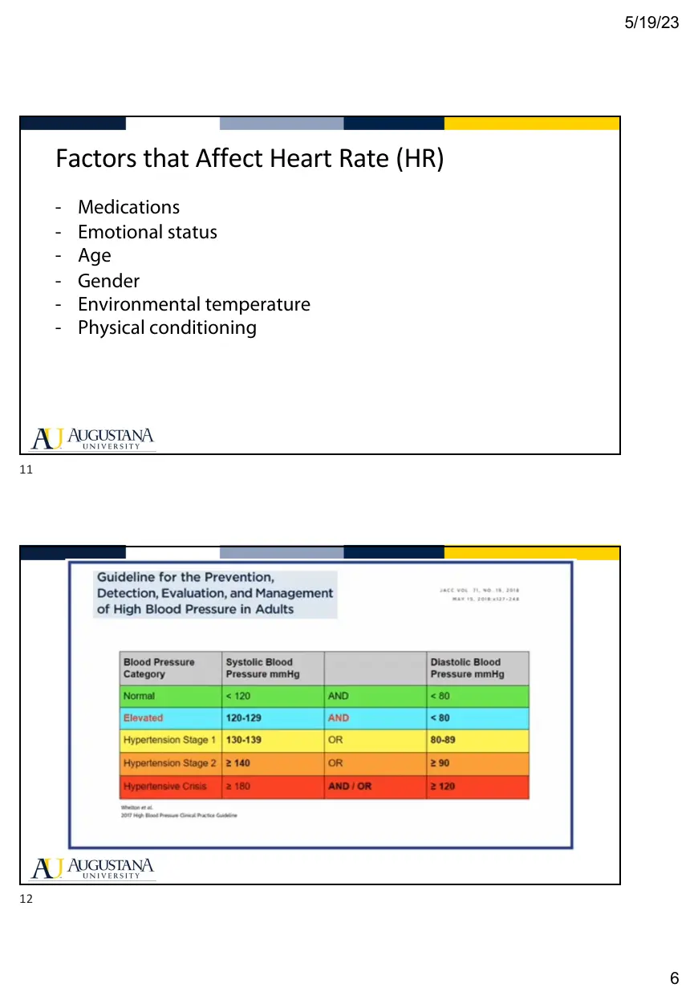
- Affected by: age, heart rate, blood volume, dehydration, cardiac output, peripheral vascular resistance, blood viscosity.
4. Respiratory Rate
- Adult (>12 y): 12–20 breaths/min; know the norms across the lifespan (pediatric reference sheet is linked in the course page).
- Assess rate, rhythm, depth, character — even inhale/exhale timing? Shallow or deep? Distress or noise?
- Affected by: age, body size/stature, exercise, body position, environment, emotional stress, medications.
5. The Modern Vitals
- Walking speed — the functional vital sign. Normal adult 10-m speed ≈ 1.2–1.4 m/s. Predicts hospitalization, adverse events, need for help with ADLs, independent ambulation, household activity — and PT is uniquely positioned to improve it.
- BMI = weight ÷ height². Screens weight categories; does not diagnose body fatness or health (a muscular person can carry a high BMI).
- Waist circumference — measured at the iliac crest (≈ umbilicus). Sex-specific cutoffs for metabolic/cardiovascular risk.
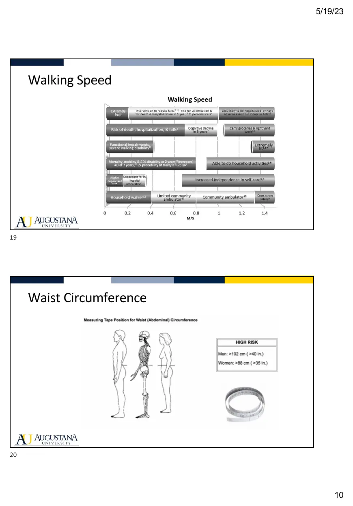
- BMI + waist circumference together stratify risk best: overweight BMI + normal waist = increased risk; the same BMI + high waist = high risk.
Topic 1.1 — Quick-Reference Glossary
| Term | Definition |
|---|---|
| Bradycardia / Tachycardia | Resting HR <60 / >100 bpm in adults |
| Normal adult BP | <120 systolic and <80 diastolic |
| Elevated BP | 120–129 systolic and <80 diastolic |
| Normal adult RR | 12–20 breaths per minute (>12 years old) |
| Rate–rhythm–depth–character | The four qualities assessed in respiration |
| Walking speed | The functional vital sign; normal ≈ 1.2–1.4 m/s over 10 m |
| BMI | Weight ÷ height²; a screen, not a diagnosis |
| Waist circumference | Measured at the iliac crest; pairs with BMI for risk stratification |
| Pulse sites | Brachial, radial, carotid, femoral, dorsalis pedis |
TOPIC 1.2
The Neurological Screen
1. Where the Screen Sits and Why
- Between examination and evaluation: subjective clues about the neurological system → tests and measures to rule in or out impairment and locate it.
- The screen's purpose: differentiate where a neurological impairment may be — which requires knowing upper vs lower motor neuron.
2. Upper vs Lower Motor Neuron
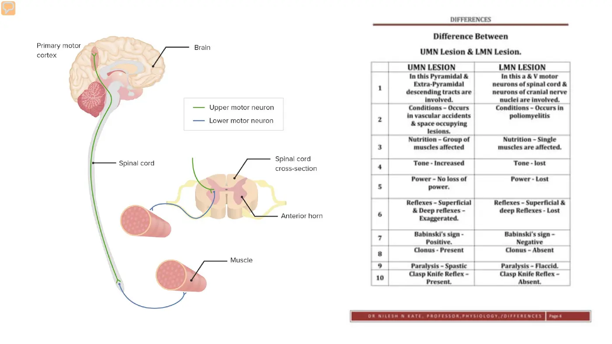
| Upper motor neuron (UMN) | Lower motor neuron (LMN) |
|---|---|
| Brain, brainstem, spinal cord — before the anterior horn cell | Anterior horn cell → peripheral nerve → muscle |
| Examples: spinal cord compression, stroke, TBI | Example: radiculopathy (disc pinching a root) |
| Tone increased; power preserved | Tone decreased; power lost |
| Reflexes exaggerated; Babinski/clonus present | Reflexes lost or diminished |
- Four screen components: motor (myotomes), somatosensory (dermatomes), reflexes, CNS screens.
3. Myotomes (Motor)
- A myotome = the group of muscles innervated by a single spinal nerve root. 31 spinal nerves; 16 have specific myotomes. Most limb muscles are multi-root (biceps = C5–6–7), so the tested movements are the strongest associations.
- Functional screen: step-up ≈ L3–4; heel walking ≈ L4–5; toe walking ≈ L5–S1. Watch quality — fasciculations, clonus, odd motor performance.
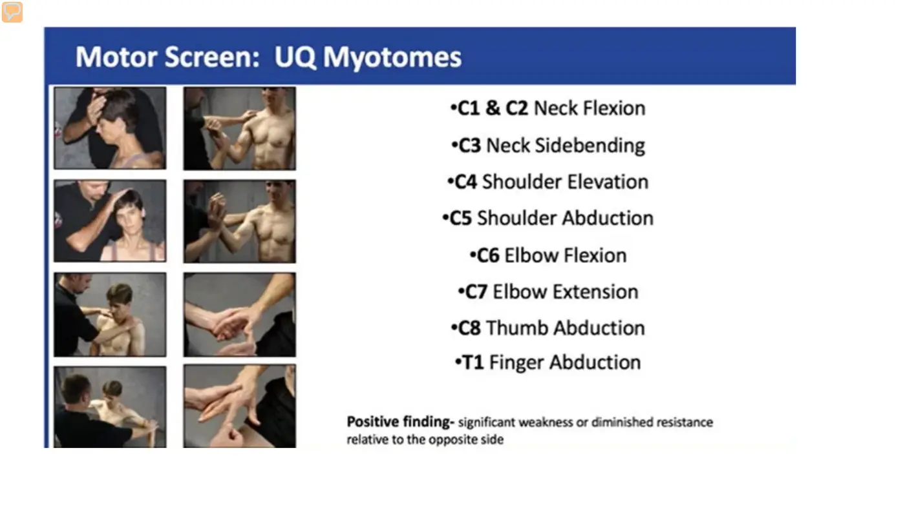
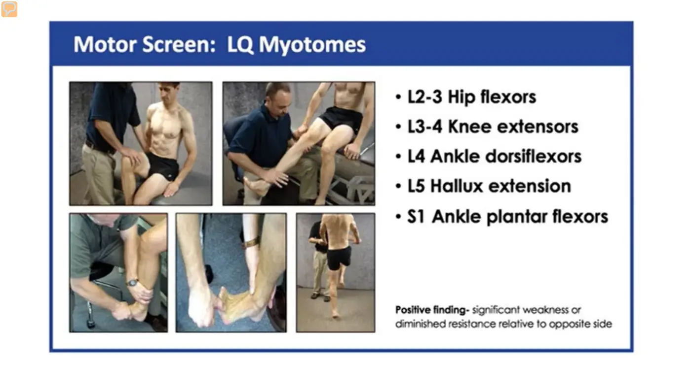
| Level | Movement (UQ) | Level | Movement (LQ) |
|---|---|---|---|
| C1–2 | Cervical flexion | L2 | Hip flexion |
| C3 | Cervical side flexion | L3 | Knee extension |
| C4 | Shoulder elevation | L4 | Ankle dorsiflexion |
| C5 | Shoulder abduction (C5–6 elbow flexion) | L5 | Great-toe extension |
| C6 | Wrist extension | S1 | Ankle plantarflexion |
| C7 | Elbow extension | ||
| C8 | Finger flexion / thumb abduction | ||
| T1 | Finger abduction |
- Procedure: demonstrate → ask if anything changed → "hold the position" → stabilize proximal → resist the distal segment in the exact opposite direction at end range (except shoulder abduction and elbow extension — resist at 90°) → hold 4–5 seconds.
- This is not an MMT: MMT has fixed positions (later in the course). The neuro screen can be run in any comfortable position — gravity does not impact the nervous system, only the musculoskeletal one.
4. Dermatomes (Sensory)
- A dermatome = the skin area innervated by afferent fibers from the dorsal root of a single nerve root (afferent = periphery → brain; efferent = brain → periphery). 30 dermatomes relay sensation.
- Roots intermingle in plexuses, so one root feeds several peripheral nerves (median n. = C6–T1; ulnar = C7–T1). Testing distinguishes single-segment loss (root/radiculopathy) from a neurological-level pattern (cord lesion).
- Light touch procedure: demonstrate on an intact region (face) → eyes closed → stroke 1–2 cm at the landmark once → patient reports when, where, and same/different intensity. Tools: fingertip, cotton ball, or clothespin (sharp side / dull side).
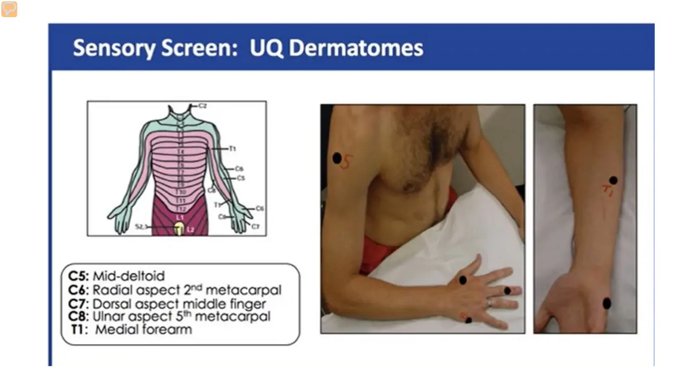
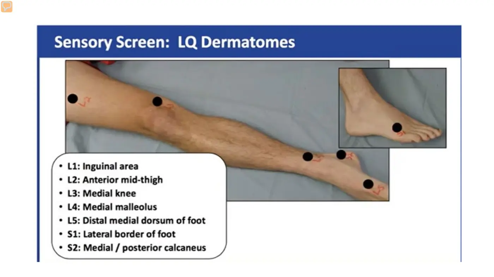
| Level | UQ landmark | Level | LQ landmark |
|---|---|---|---|
| C4 | AC joint | L1 | Inguinal area |
| C5 | Lateral side of elbow | L2 | Anterior mid-thigh |
| C6 | Dorsal surface next to thumb | L3 | Medial knee |
| C7 | Dorsal surface next to middle finger | L4 | Medial malleolus |
| C8 | Dorsal surface next to little finger | L5 | Distal medial dorsum of foot |
| T1 | Medial side of elbow | S1 | Lateral border of foot |
| T2 | Apex of axilla | S2 | Medial / posterior calcaneus |
5. Reflexes
- A reflex is a monosynaptic loop: tendon tap → quick stretch → muscle spindle → contraction. Hyporeflexia → LMN concern; hyperreflexia → UMN. Tap several times to reveal fatigue or fading.
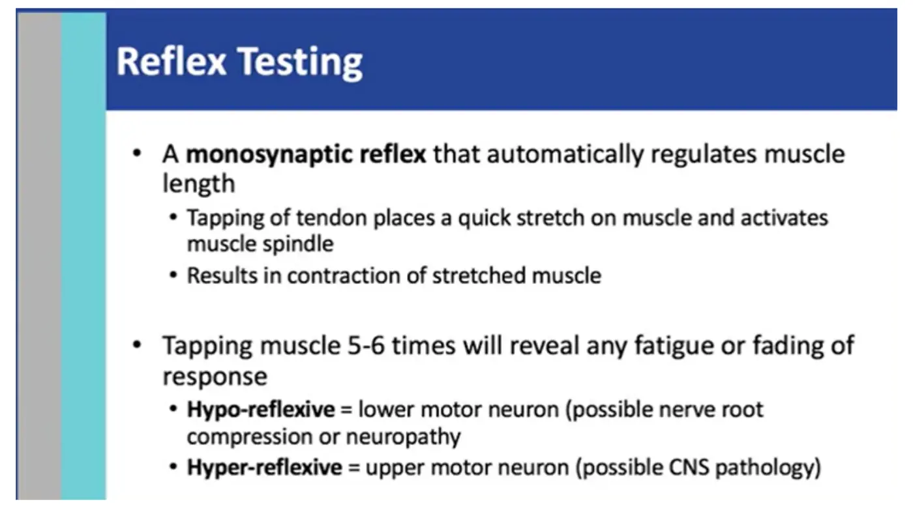
- Biceps (C5): cradle the arm, thumb over the tendon, strike your own thumbnail. Brachioradialis (C6): hold the patient's thumb firmly to pop up the tendon, strike the tendon. Triceps (C7): unweight the arm to relax and lengthen the muscle.
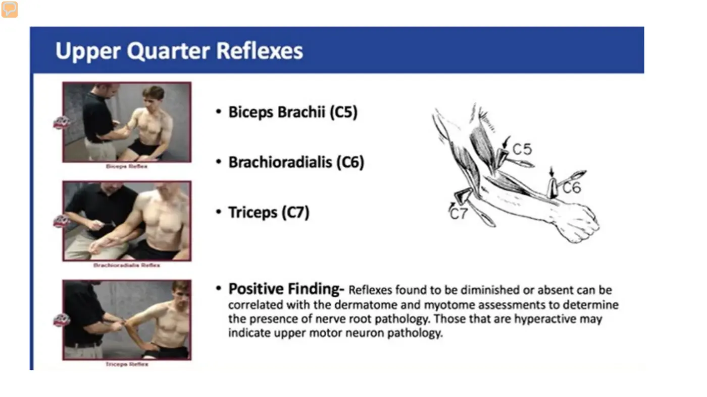
- Patellar (L2–4): strike the broad quad tendon. Achilles (S1–2): dorsiflex the foot to put the tendon on stretch; normal = the foot pushes into your hand.
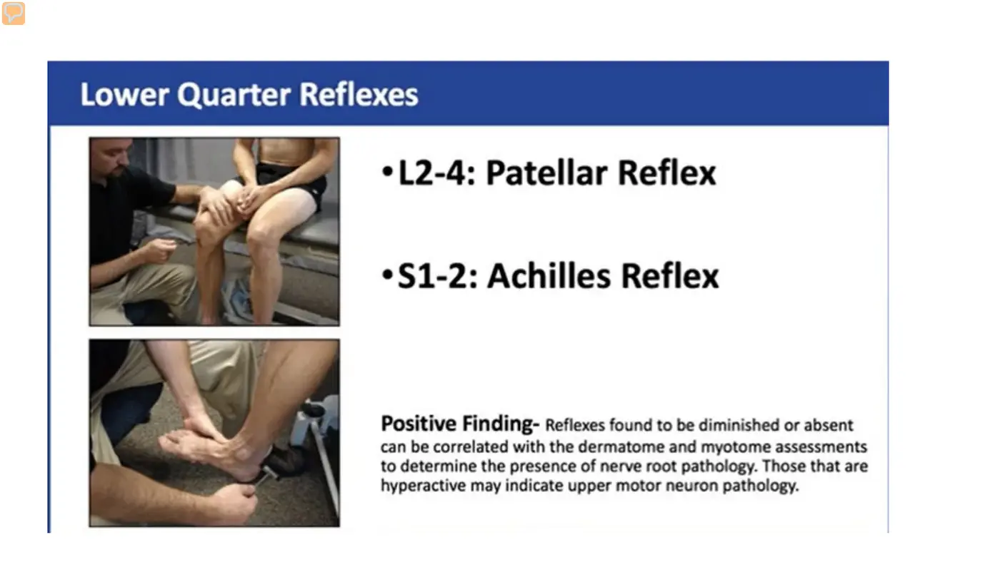
- Grading: 4+ very brisk (may accompany clonus) · 2+ normal · 1+ diminished · 0 none. Correlate diminished/absent with dermatome findings for root pathology; hyperactive suggests UMN.
- Jendrassik maneuver — patients can consciously suppress reflexes: clasp hands and pull, look away, answer questions while you strike. Document (R) when reinforcement was needed.
6. Central Nervous System Screens
- Clonus — quick dorsiflexion → involuntary rhythmic beating; a CNS sign (stroke, cord damage, MS). Sustained clonus (5+ beats) is abnormal. Watch the linked video — you must recognize it.
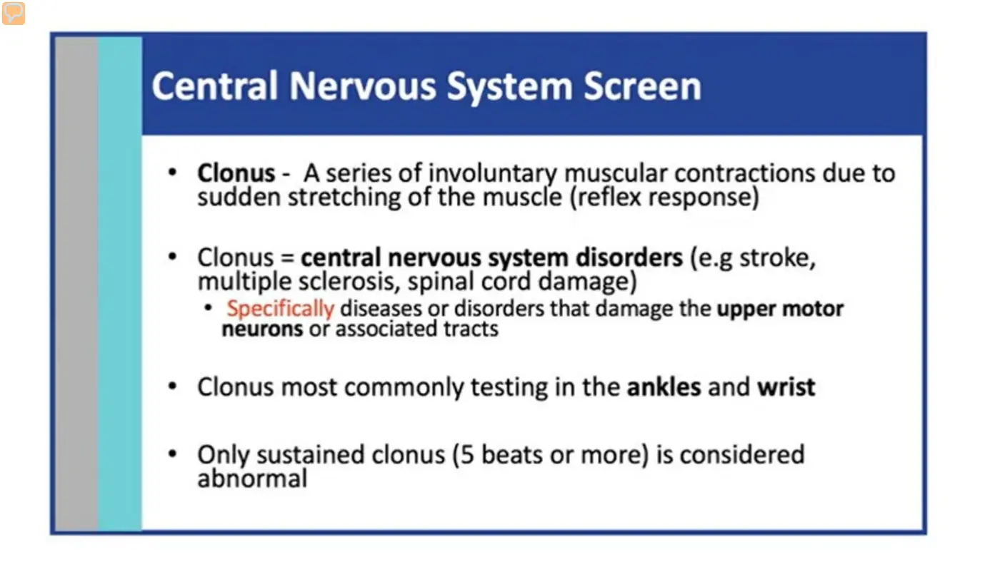
- Babinski — stroke firmly along the lateral border of the foot and around the toes. Normal = toes curl/withdraw. Abnormal = hallux extends, toes fan → UMN.
- Hoffman — bracket the middle finger, flick the distal IP joint; positive = index/thumb flexion → think cervical cord compression.
- Inverted supinator sign — strike the brachioradialis region; positive = pronation or finger grasping → UMN.
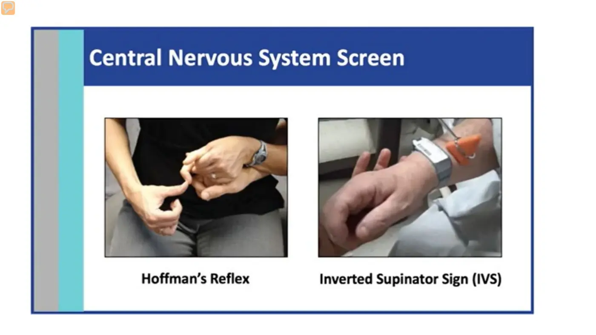
Topic 1.2 — Quick-Reference Glossary
| Term | Definition |
|---|---|
| UMN / LMN | Brain-brainstem-cord vs anterior horn cell-nerve-muscle; opposite tone and reflex findings |
| Myotome | Muscle group innervated by one spinal nerve root |
| Dermatome | Skin area innervated by afferent fibers of one dorsal root |
| Afferent / Efferent | Sensory, periphery → brain / motor, brain → periphery |
| Radiculopathy | Nerve-root pathology — the classic LMN screen finding |
| Monosynaptic reflex | Single-synapse tendon-tap loop via the muscle spindle |
| Reflex grades | 4+ brisk/clonus · 2+ normal · 1+ diminished · 0 absent |
| Jendrassik maneuver | Distraction reinforcement (clasp-and-pull) to unmask suppressed reflexes; document (R) |
| Clonus | Rhythmic involuntary beating on quick stretch; sustained ≥5 beats = abnormal |
| Babinski | Lateral-foot stroke; hallux extension + toe fanning = UMN sign |
| Hoffman / Inverted supinator | UQ UMN screens: finger-flick → thumb/index flexion; brachioradialis strike → pronation/grasp |
MODULE 1
Sync Session — Week 1
- Weekly flow: async prep → sync session → practice and reflection. Tools: PhysioU, Canvas, lab kit, Zoom breakouts.
- Demo pearls: no thumbs on pulses; be sneaky with RR (patients change breathing when watched); make the math easy; practice a lot.
Breakout cases
- Mr. Allen, 55, post-knee surgery — which vitals to measure and why, how to set up the patient, which findings change the plan of care.
- Ms. Lopez, 42, right UE numbness — which tests to perform, positioning and cueing, and what findings suggest UMN vs LMN.
- Key takeaways: vitals = baseline for safe care; neuro screen = rule in/out neural involvement; communicate clearly, stay systematic, ensure safety.
- On small differences between resources: "Discrepancies... let it go... for now." PhysioU is the standard for technique.